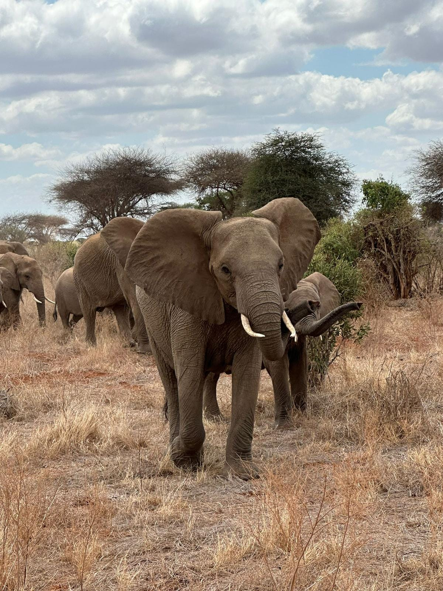
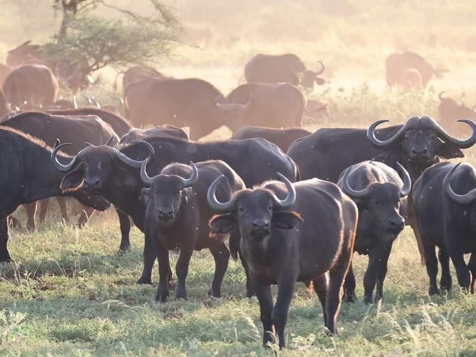
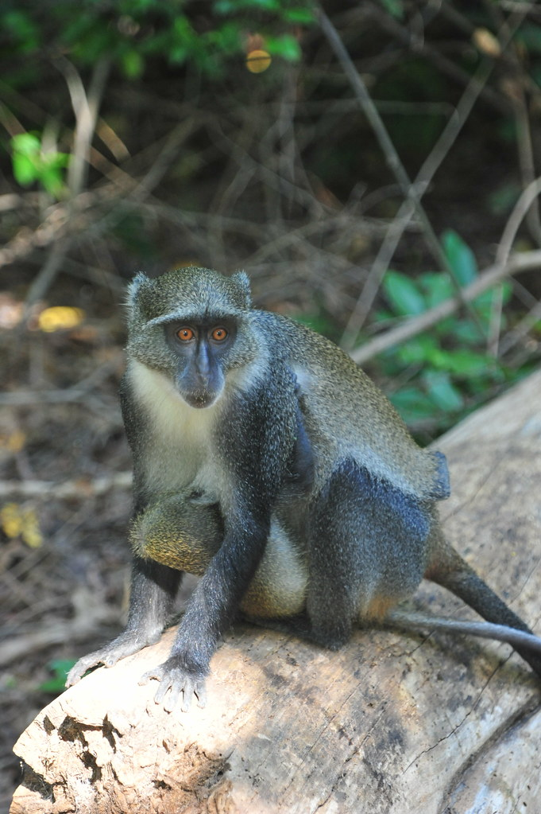
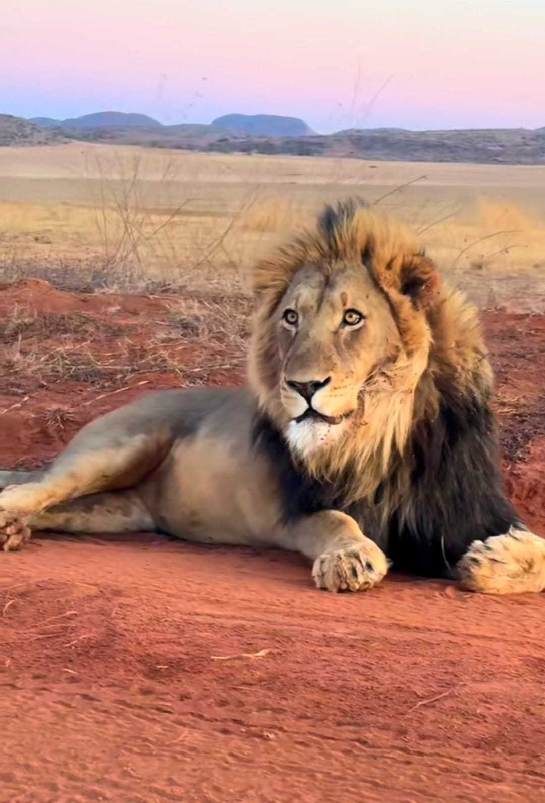
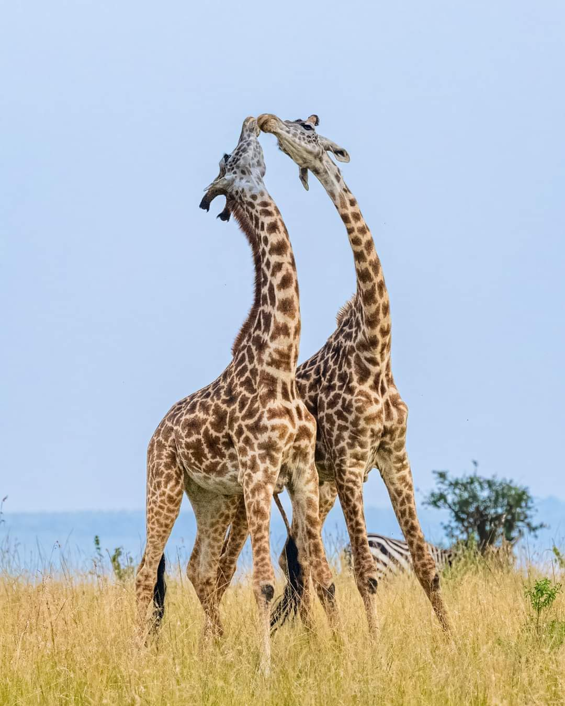

One-Day Safari in Tsavo East Park
This safari offers a quick yet intense immersion into the wild. Visitors can expect to see majestic lions and a variety of other species in one of Kenya's oldest and largest parks.
Two-Day Safari at Tsavo East
A perfect excursion to enjoy the wonders of Tsavo East Park in search of the unique wildlife that defines this remarkable place.
Blue Safari Sardinia 2
A boat excursion within Watamu Marine Park, including snorkeling, dolphin watching, relaxing on sandy atolls, and a seafood lunch.

Gede Ruins
An excursion to the ancient Arab ruins of Gede, inhabited by charming little monkeys.
Golden Beach and Marafa
We will explore and feel the sand rich in pyrite that makes this place unique, followed by admiring the stunning rock formations of Marafa.

Golden Beach, Robson Island, and Marafa
A complete tour covering the golden sandy beach, the exotic Robson Island, and the dramatic geological formations of Marafa (Hell's Kitchen), ending with a sunset aperitif.

Private 3-Day Safari: Tsavo East and Taita
This exclusive journey combines the thrill of Tsavo East with the tranquility of the Taita Hills. Overnight stays at Satao Camp and Saltlick provide comfort and spectacular views.
Group Safari: 3 Days and 2 Nights in Tsavo East and Amboseli
Explore the diversity of two renowned parks in a single journey. Voi Safari Lodge and Kibo Safari Camp serve as bases for unforgettable nights in the heart of the savannah.
Private 4-Day Safari: Tsavo East, Taita, and Amboseli
A comprehensive tour showcasing Kenya's landscapes and wildlife. With overnight stays in selected lodges, it’s the ultimate experience for nature lovers.

Urban Safari at Nairobi National Park
A unique option for those who want a taste of safari without venturing too far from the capital. Perfect for those short on time but eager to experience wildlife.